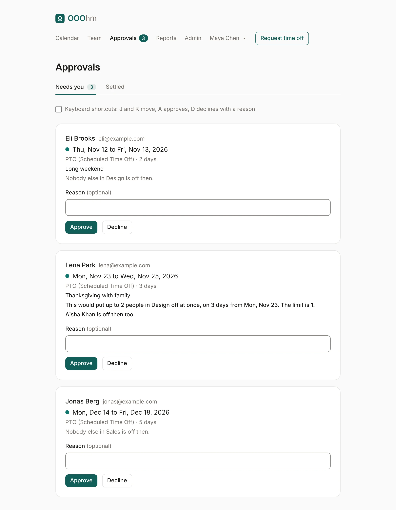
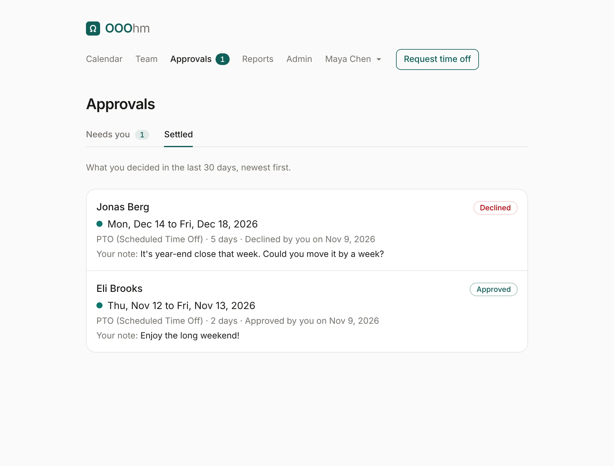
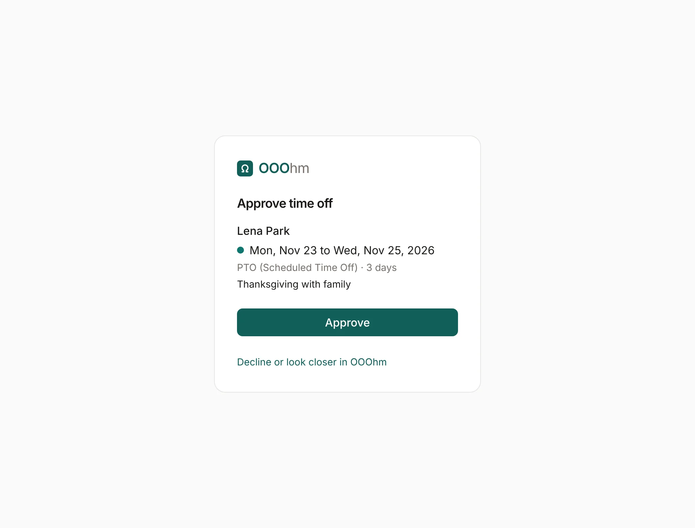

Approvals
Managers and admins have Approvals in the top bar, with a count of what's waiting for them.
Who approves whom
Each person has one approver:
- their manager (Admin → People);
- if they have none, their department's manager (Admin → Departments);
- if there's none of those either, an admin.
Someone set to Approves their own requests has their requests approved as soon as they send them, still within their balance. When a company turns approval off (Just let us know under Company), nothing waits here: time off is booked straight away, and the approver gets a heads-up email instead.
Needs you

Each request shows who asked, the dates, the leave type, how many days, and their note. Under it, OOOhm says who else is off then (Aisha Khan is off then too), or that nobody else in their department is.
If the person's department has a coverage limit and this request would go past it, a warning says so in bold: This would put up to 2 people in Design off at once, on 3 days from Mon, Nov 23. The limit is 1. It's a warning only; you can still approve.
Approve or Decline, with an optional Reason. The person gets an email either way (approved, declined), with your reason in it.
Keyboard shortcuts: tick the box to use J and K to move between requests, A to approve, and D to decline with a reason.
Waiting on others
Admins also see Waiting on others: requests assigned to someone else. As an admin you can still decide them.
Settled
Settled lists what you decided in the last 30 days, newest first, with your note.

Approving from the email
The request email has an Approve button. It opens a page in OOOhm that shows the request and asks once more, so a mail scanner that follows links can't approve anything by itself.

The link is for that approver alone and works for 7 days. It stops working once the request is decided, cancelled, or moves to another approver. To decline, use Decline or look closer in OOOhm.